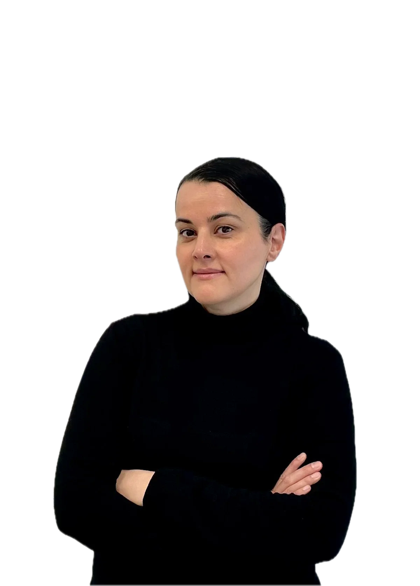

A · Huidig
Oorspronkelijke uitsnede: veel lege ruimte boven het hoofd.

Emine Elmaci-van RossenHuidtherapeut & eigenaar
B · Groter
Strakke uitsnede, ruim beeldvullend. Naamkaartje blijft onderin.

Emine Elmaci-van RossenHuidtherapeut & eigenaar
C · Groter, naam eronder
Als B, maar de foto helemaal vrij; naam en functie als onderschrift onder het kader.
Emine Elmaci-van RossenHuidtherapeut & eigenaar